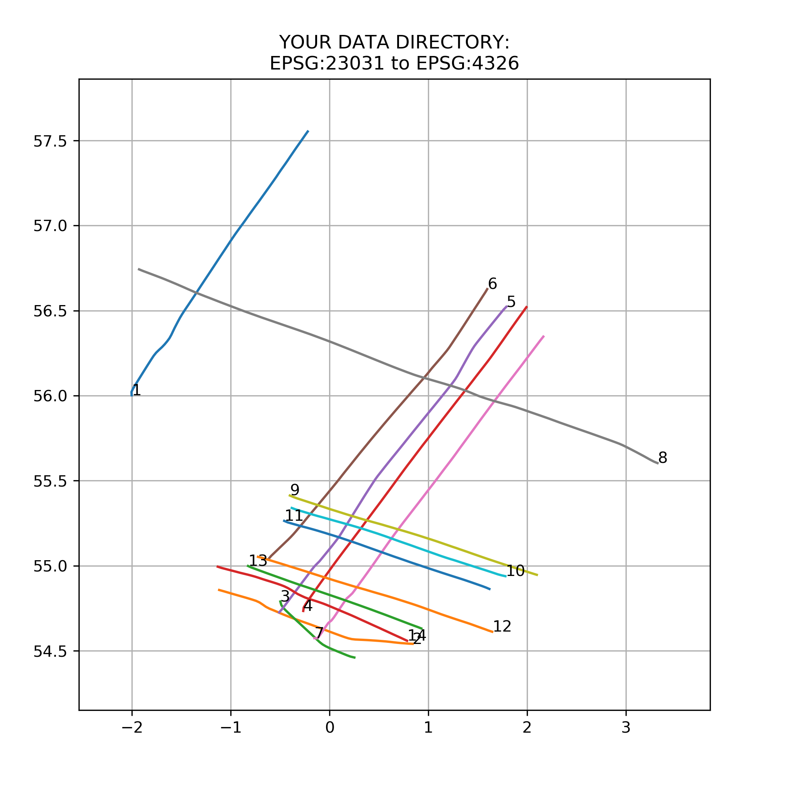
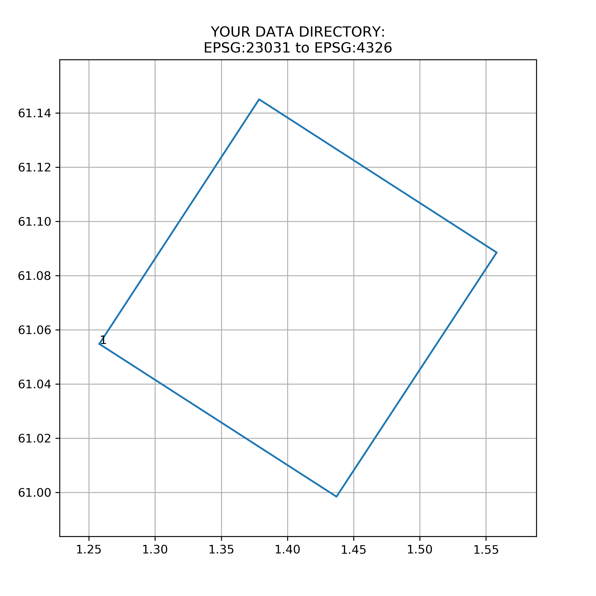

Read and map SEG-Y files
Scan for SEG-Y data. Read files and map in a user-defined coordinate system.
Scan specified folder for files with a .sgy or .segy extension. Identify if spatial data is available for CDP, source, or receiver/group and if the data is for a 2D or 3D survey. Read coordinates and convert to a set coordinate system. Plot new coordinates to a map as lines (2D) and polygons (3D) in a .png image. Provide text file to relate map to files within the directory, and provide information about the survey geometry.
Requires Segpy and Pyproj libraries. Survey name, folder and EPSG values currently have to be specified in the script.
Work is ongoing to increase usability and efficiency.
 Website design and maintenance by Sarah Murray. Page updated June 2018.